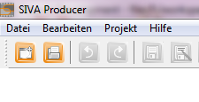
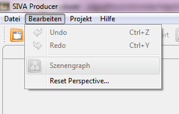
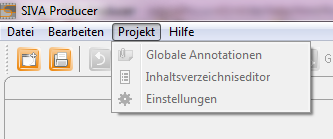

Menu bar
The structure of the menu consists of the following parts: File, Edit, Project and Help.

The File menu consists of the following parts:
- New Project
create a new interactive video project
- Open project
open an already existing and saved interactive video project to edit it
- Save project
save an interactive video project and be able to edit it afterwards
- Save project as
save an interactive video project in another file to be able to edit it afterwards
- Load media files
load a media file (picture, video, audio,...) into the media repository to continue editing later on
- Hand over project
export the project with all the media files into a file
- Export
export the interactive video project for the SIVA-Player
- Close project
close an interactive video project without closing the entire programme
- Exit
close the SIVA producer

The editing menu consists of the following parts:
- Undo
you can undo your latest action
- Redo
rebuilds an undone action
- Scengraph
opens the graph-editor to edit the scenegraph
- Reset Perspective...
puts the editors and views back into the the size and position determined by the programme

The Project-menu consist of the following parts:
- Global Annotations
opens an editor to create/ modify global annotations
- Content editor
opens the editor to create/ modify the table of contents of an interactive video
- Settings
opens the editor for settings of the project/ interactive video

The Help-menu consists of the following parts:
- Help Contents
opens the help
- Search
opens the search within the help
- About SIVA Producer
infos about this software